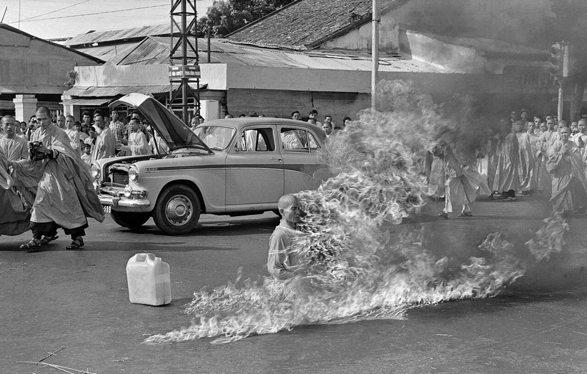

The Burning Monk
Malcolm Browne · 11 June 1963 · Photograph
In copyright. Look and learn: shown for study, not for download.
On 10 June 1963 American correspondents in Saigon were told that something important would happen the next morning outside the Cambodian embassy. Most ignored it. Malcolm Browne, the Associated Press bureau chief, was one of the few who went, and photographed the monk Thích Quảng Đức, about sixty-six, setting himself alight at the intersection in protest at the Diệm government's treatment of Buddhists. Browne, thirty-two, had trained in chemistry before journalism. The picture was the World Press Photo of the Year for 1963.